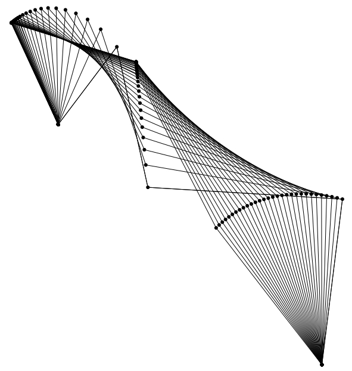
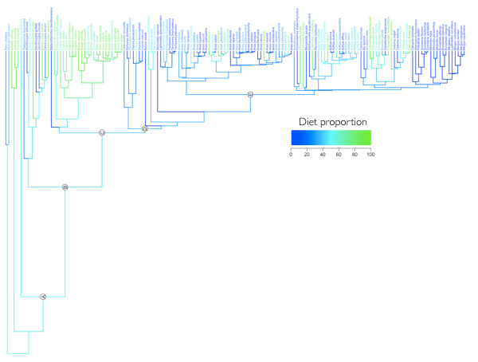

Software
Unlocking the potential of natural history collections
Natural history collections have incredible potential to inform current questions in science and
an important aspect of my research is developing methods to make these collections more accessible
to the scientific community and the public. Below are some of the new methods and models I'm currently
developing, with a particular focus on morphology, feeding ecology and biomechanics.
3D landmarks and curves collected using the StereoMorph R package
Standard digital cameras are commonly used for 2D morphometrics to collect landmarks and curves
from relatively flat objects. But if the objects are more three-dimensional, users often
have to resort to methods such as microscribes or surface scanning.
The
StereoMorph R package (Olsen & Westneat 2014) allows users to collect
3D landmarks and curves from objects using two standard digital cameras.
Read more...
A browser-based digitizing application included in the StereoMorph R package
The StereoMorph R package includes a digitizing application that can be used to collect landmarks and curves from photographs
for 2D morphometrics.
The application runs in a web browser, providing an interactive and easy-to-use interface.
Users can scale landmarks and curves using manually digitized ruler points or an automatically detected checkerboard pattern directly in the app interface.
Shape and scaling data are saved into a single file for easy referencing.
The app is completely free and compatible across Linux, Mac and Windows.
Read more...

A 3D 5-bar linkage created using linkR
Linkages, or closed loops of inter-jointed, rigid links, are commonly used
in engineering to transform an input motion or force into an output motion or force
along a particular path.
Several groups of animals have evolved musculoskeletal systems for feeding, breathing and defense that employ
structures analogous to human-made linkages in engineering.
However, while human-made linkages are usually confined to a single two-dimensional plane,
biological linkages are often three-dimensional.
The
linkR package for R provides a toolkit for predicting
motion, force and torque outputs of 2D and 3D linkages
and calculating linkage mechanical properties such as motion, force
and torque transmission ratios.
Read more...
svgViewR interactive 3D web viewer
Most standard visualization tools are intended for visualization of 2D,
static data.
Yet the vast majority of biological phenomena are neither 2D nor static.
The svgViewR package for R
allows users to easily create visualizations of 3D data or moving models
with interactive zoom, 3D rotation and translation using mouse and keyboard shortcuts.
Read more...

Diet data from the literature used to study the evolution of herbivory in Anseriformes
For many species of birds there is an enormous wealth of published diet data in the literature.
However, a researcher interested in using these data to address large-scale questions is
confronted with several challenges.
Many data are published in journals not included in standard library subscription services
and these data do not exist in a standard format that allows a user to easily perform
the same query across several datasets.
dietQuery is a R package in development for compiling diet data sets from the literature and searching
these data sets using taxonomy-based queries.
Read more...